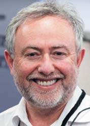
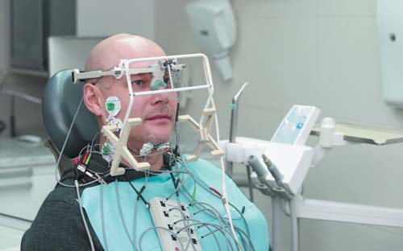
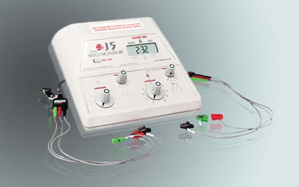
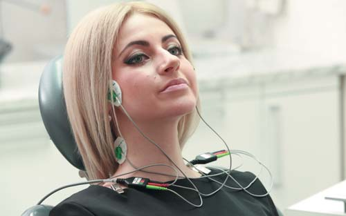

Практика · журнал «ДентАрт» 2017 №2
Визначення нейром'язової фізіологічної оклюзії за допомогою черезшкірної електронейростимуляції
USE OF TRANSCUTANEOUS ELECTRONEUROSTIMULATION TO ESTABLISH NEUROMUSCULAR PHYSIOLOGICAL OCCLUSION

Як засвідчує безліч досліджень, проведених в останні десятиліття, більш ніж у 85% пацієнтів розвинених регіонів планети звична оклюзія є патологічною.1-13 Передусім це пов'язано з виникненням у ранньому дитячому віці алергійних запальних процесів у відповідь на забруднення довкілля і харчову алергію (коров'яче молоко, шоколад, пшениця тощо).
У перші чотири роки життя людини навколишнє середовище чинить найбільший вплив на ріст і розвиток аномалій і деформацій у краніофасціальній системі.
У зв'язку з негативним впливом поліциклічних ароматичних гідрокарбонів (ПАГ), що потрапляють у довкілля при спалюванні палива, порушується функція дихання і підвищується ризик респіраторних захворювань у ранньому віці.14
У результаті алергійної запальної реакції у верхніх дихальних шляхах дитини накопичується ексудат, який порушує нормальну роботу ворсинок носа. Ці мікроскопічні ворсинки коливаються з частотою 10-20 за секунду, збираючи пил, бактерії, віруси, пилок. Потім коливання ворсинок транспортують чужорідні бактерії в носоглотку, звідки вони через травний тракт виводяться назовні.
При алергійному ж набряку нормальна функція ворсинок епітеліального вистилання носа порушується у зв'язку з рясною екскрецією густих виділень. Тому бактерії нагромаджуються у верхніх дихальних шляхах, викликаючи гіпертрофію лімфоїдної тканини носоглотки, що у свою чергу призводить до гіпертрофії мигдаликів кільця Пирогова та аденоїдної тканини. Відтак дитина перестає дихати через ніс і формує ротовий тип дихання.14
Ротове дихання викликає порушення балансу між стоматогнатичними силами, що впливають на розвиток і ріст зубощелепної системи. Оскільки нижня щелепа при ротовому диханні переміщується вниз, язик, ідучи за нижньою щелепою, лягає на нижні бічні зуби. Латеральний тиск лицьових м'язів на верхню щелепу за відсутності контрсили з боку язика призводить до звуження і деформації верхньої щелепи. Недіагностоване ротове дихання деформує щелепу та носові ходи і може змінити обличчя і тіло на все життя. Порушення носового дихання має сильний вплив на організм у цілому. У свою чергу, нормальний розвиток дихальних шляхів залежить від розвитку обличчя і щелеп.
Не можна не відзначити негативний вплив штучного вигодовування, при якому пляшечка штовхає і фіксує нижнє положення язика, а також шкідливих звичок раннього дитячого віку (смоктання пальця і т.д.)
Як результат впливу різних етіологічних факторів, у дитини розвивається цілий цикл патофізіологічних процесів, які врешті-решт призводять до патологічної оклюзії, дисфункції СНЩС і нічного апное.
Звужена, підковоподібна верхня щелепа зміщує нижню щелепу дистально, тому виникає дистальний глибокий прикус. Язик, що лежить на бічних зубах, перешкоджає нормальному прорізуванню зубів, у результаті чого виникає дистальна сходинка за нижніми іклами і глибока крива Шпеє.
Це призводить до ще більшого зміщення нижньої щелепи дистально для забезпечення бічної оклюзії. Функціонально це викликає зміщення нижньої щелепи на патологічну звичну траєкторію руху, латеральне або фронтальне прокладання язика при ковтанні і зміщення язика дистально. Зміщення кореня язика назад призводить до звуження дихальних шляхів, і людина згодом має хронічний ротовий тип дихання і великий ризик розвитку нічного апное. Тому не випадково 75% пацієнтів з дисфункцією СНЩС страждають на нічне апное, яке, у свою чергу, може стати пусковим механізмом серцево-судинних захворювань, діабету, гіпертонії і може призводити до ранньої смерті.
Дистальне зміщення нижньої щелепи поєднується з ротацією першого і другого шийних хребців, зміщенням шиї вперед і закиданням голови назад. Зміни в суглобі при цьому можуть характеризуватися зміщенням суглобового диска вперед, латерально або медіально і виникненням реципрокного клацання.
М'язи, вимушені компенсувати неправильне положення нижньої щелепи і забезпечувати її переміщення з патологічної траєкторії, характеризуються гіперактивністю, яка з часом переходить у спазм і далі в стан хронічної втоми.
Гіпертонус м'язів може викликати вторинні кісткові зміни в щелепах, суглобі і призводити до ще більшого порушення оклюзії. Оклюзійна площина при цьому може змінювати своє положення у шести напрямках відносно норми. Вертикальний компонент оклюзії має найбільшу зону комфорту, і тому м'язи та суглоб найлегше пристосовуються до змін висоти прикусу.
До решти п'яти ступенів свободи переміщення оклюзійної площини належать зміни в сагітальній, транверзальній площинах, обертання навколо вертикальної осі, обертання навколо горизонтальної осі і ротації тільки переднього відділу нижньої щелепи. До них зубощелепна система адаптується погано, і тому відхилення від фізіологічної норми в них може викликати симптоми дисфункції СНЩС. Доведено повну конгруентність суглобових поверхонь СНЩС і атланто-окципітального зчленування.16 Зміни, що відбуваються в одному з цих суглобів, ведуть за собою такі самі зміни в іншому, і навпаки. При зміщенні нижньої щелепи назад виникає переднє положення голови, яке призводить до значного збільшення навантаження на хребетний стовп шийного відділу, гіпертонусу м'язів шиї і плечового пояса. При зміщенні голови вперед на кожні 2,5 см вага голови збільшується на 5 кг.
При зміщенні шиї вперед виникають звуження дихальних шляхів, деформація верхнього зубного ряду, дистальне зміщення нижньої щелепи, латеральне прокладання язика внаслідок недостатнього місця у ротовій порожнині, яке стримує прорізування бічних зубів, і як наслідок — деформація оклюзійної площини нижньої щелепи.
Гіпертонус жувальних м'язів і м'язів шиї викликає порушення роботи м'язових веретен, які відіграють велику роль у регуляції м'язового тонусу центральною нервовою системою. Полюси м'язового веретена виявляються стиснутими, що викликає порушення їх функції і, у свою чергу, підтримує гіпертонус або хронічну втому м'язів, які врешті-решт не дають досягти стабільної оклюзії. На сьогодні єдиним методом нормалізації роботи м'язових веретен є відновлення нормального м'язового тонусу за допомогою черезшкірної ультранизькочастотної електронейростимуляції.16
Комплекс патологічних процесів, що виникає за неправильної оклюзії, також включає звуження дихальних шляхів, тісно пов'язане з дисфункцією СНЩС. Нічне апное та інші захворювання сну, пов'язані зі звуженням дихальних шляхів, можуть бути викликані дистальним положенням нижньої щелепи і язика, скороченням обсягу ротової порожнини і носоглотки за рахунок звуження щелеп, гіпертрофії слизової оболонки носоглотки, гіпертрофії піднебінних мигдалин та аденоїдів. Надмірна вага і ожиріння, порушення постави також відіграють велику роль у розвитку нічного апное.
Безумовно, описані вище процеси є лише частиною циклу патофізіологічних змін, що відбуваються в організмі людини у відповідь на неправильну оклюзію.

З плином життя вторинні зміни, пов'язані з парафункцією м'язів (бруксизм), патологічним стиранням, вторинною деформацією зубних рядів, викликаною ранньою втратою зубів, неадекватно проведеним стоматологічним лікуванням і т.д., посилюють патологічну оклюзію.
Усе сказане в остаточному підсумку зумовлює неправильне положення оклюзійної площини, найчастіше по всіх 6 ступенях свободи зміни її положення.
Тому лікареві-стоматологу до плану лікування слід включати заходи з діагностики та лікування захворювань СНЩС і жувальних м'язів. У зв'язку з цим одним з напрямків діагностики і терапії є виявлення і усунення порушень тонусу жувальної мускулатури.17
Для визначення оптимального положення нижньої щелепи ряд фахівців рекомендують використовувати метод черезшкірної електронейростимуляції (TENS — transcutaneous electric neuro stimulation) гілок трійчастого, лицьового й додаткового нервів.17
Нейром'язовий фізіологічний підхід
Основна концепція нейром'язової стоматології зводиться до ідеї відновлення нормального тонусу м'язів голови і шиї, які в цьому випадку сприяють нормалізації шийного відділу хребта, положення голови, що у свою чергу відновлює положення нижньої щелепи і оклюзійної площини у стані фізіологічного спокою.
Основним методом досягнення цієї мети є черезшкірна електронейростимуляція м'язів голови і шиї (TENS).
Для цієї мети компанія Міотронікс (США) розробила перший у світі наднизькочастотний електронейростимулятор Міомонітор. Наявність двох каналів Міомонітора дозволяє одночасно і симетрично стимулювати всю жувальну і мімічну мускулатуру голови (п'ята і сьома пара черепно-мозкових нервів), м'язів шиї (одинадцята пара черепно-мозкових нервів). На сьогодні Міомонітор і діагностична система Міотронікс К7 в цілому — єдине обладнання, яке пройшло таку сертифікацію у США і отримало рекомендацію FDA для використання з метою реєстрації оклюзії.

Міомонітор виробляє слабкий електричний імпульс з частотою 0,67 Гц (одне коливання кожні півтори секунди) і амплітудою до 10 мікровольт. Подібні методики реабілітації м'язів використовуються в неврології та спортивній медицині.17
Імпульс з допомогою міотродів, наклеєних на шкірні покриви, подається на трійчастий, лицевий та додатковий черепно-мозкові нерви. Імпульс поширюється по аферентних волокнах цих нервів в обидва напрямки (антидромно) на периферію і до ЦНС. У ході електронейростимуляції за рахунок наднизької частоти імпульсу рефрактерний період, що виникає після піку потенціалу дії, поступово блокує передачу імпульсу від ЦНС до м'язів на рівні альфа-мотонейронів, що призводить до того, що скороченням м'язів повністю управляє Міомонітор. Це дозволяє забезпечити антидромну перебудову реципрокної передачі ланцюга зворотного зв'язку і тимчасово «стерти» з м'язової пам'яті патологічні енграми, пов'язані зі звичною оклюзією.
Крім цього, за рахунок того, що кожні півтори секунди відбувається мимовільне скорочення м'язів, з них виводяться накопичені шлаки (молочна кислота) і м'язи насичуються киснем і АТФ. У результаті анаеробний шлях отримання енергії, характерний для спазмованих м'язів, замінюється на аеробний (цикл Кребса). Це призводить до розслаблення м'язів та відновлення нормального балансу м'язових волокон. Нормалізується довжина м'язових волокон, відновлюється тонус м'язів, що об'єктивно підтверджується міографією.


Відновлена довжина м'язів, відповідальних за підтримання положення нижньої щелепи в просторі, сприяє усуненню ротації нижньої щелепи навколо вертикальної, трансверзальної та сагітальної площин і дозволяє нижній щелепі переміститися в оптимальне положення фізіологічного спокою щодо всіх шести ступенів свободи її переміщення. Оклюзійна площина, як правило, розташована на 1,5-2 мм вище, ніж положення фізіологічного спокою. Тому її точна локалізація не становить труднощів при застосуванні електронейростимуляції.
Візуалізація процесу за допомогою комп'ютерної гнатографії з одночасним проведенням міографії, яка досягається шляхом застосування діагностичної системи Міотронікс К7, дозволяє на основі об'єктивних даних зареєструвати оптимальне положення оклюзійної площини з точністю до часток міліметра і перенести це положення на моделі пацієнта. Оптимальність цього положення забезпечується одночасним використанням чотирьох об'єктивних критеріїв — трьох функціональних і естетичного.
До функціональних критеріїв належать:
- точне знаходження стану фізіологічного спокою нижньої щелепи, яке виникає після 60 хвилин електронейростимуляції;
- відстеження реакції м'язів на положення нижньої щелепи в конкретній позиції, яка відображається на екрані комп'ютера у вигляді міографії і гнатографії в реальному часі;
- локалізація фізіологічної нейром'язової траєкторії руху нижньої щелепи, яка формується під дією Міомонітора в результаті розслаблення м'язів і стирання енграм.
Оскільки 80-95% людей мають дистальне положення нижньої щелепи, нейром'язова траєкторія найчастіше виявляється попереду звичної. Тобто при оптимальній оклюзії нижня щелепа найчастіше переміщується вперед.
Естетичний індекс LVI визначає положення нижньої щелепи у вертикальній площині згідно з правилом золотої пропорції і розраховується в залежності від ширини верхніх центральних різців.
Таким чином, зіставлення 4-х критеріїв об'єктивної діагностики положення нижньої щелепи дає можливість визначити функціональну зону комфорту. У межах цієї зони в залежності від цілей стоматологічного лікування лікар може реєструвати оклюзію. Наприклад, при реєстрації оклюзії у пацієнтів, які звернулися з метою естетичної реставрації, за відсутності дисфункції СНЩС або нічного апное естетичний критерій відіграє визначальну роль. Положення оклюзійної площини має бути в безпосередній близькості до індексу LVI, якщо ця позиція міститься в межах зони комфорту. У більшості випадків положення нижньої щелепи відповідно до індексу LVI збігається з положенням, визначеним щодо стану фізіологічного спокою. Крім того, це положення характеризується найменшою активністю м'язів, збалансованою їх роботою і розташуванням нижньої щелепи на нейром'язовій траєкторії.
При плануванні ортодонтичного лікування оклюзія реєструється в зоні крайніх меж зони комфорту, оскільки таке лікування, як правило, вимагає гіперкорекції.
Висновки
Переважна кількість пацієнтів має патологічну звичну оклюзію, яка може характеризуватися зміною положення оклюзійної площини по 6 ступенях свободи її переміщення. Як правило, відхилення нижньої щелепи від нормальної фізіологічної траєкторії поєднується зі змінами в зоні СНЩС і шийного відділу хребта. Ці зміни можуть супроводжуватися симптомами дисфункції СНЩС, так само як і спостерігатися без жодних симптомів. Будь-яке стоматологічне лікування, яке вимагає створення оптимальної фізіологічної оклюзії, зміни положення нижньої щелепи, відновлення дихальних шляхів і постави, передбачає передусім визначення стану фізіологічного спокою та оклюзійної площини. Технологія, яку розробив доктор Бернард Дженкельсон, вдосконалена завдяки сотням досліджень і десятиліттями перевірена на практиці, дозволяє це зробити достовірно на основі об'єктивних даних.
Міомонітор (TENS) дозволяє розслабити м'язи голови і шиї, відновити довжину м'язових волокон, стерти патологічні енграми, що створює передумови для реєстрації положення нижньої щелепи і оклюзійної площини на основі фізіологічних принципів роботи всієї зубощелепної системи.
Точність визначення оклюзії з використанням Міомонітора зумовлена також відсутністю штучної маніпуляції нижньої щелепи. Крім того, описана вище методика виключає вплив патологічно змінених анатомічних структур при визначенні оклюзії.
Завдяки тому, що електронейростимуляція за допомогою Міомонітора відновлює м'язовий тонус, нормалізується орієнтація оклюзійної площини у 6 вимірах, і нижня щелепа виявляється на фізіологічній нейром'язовій траєкторії. Це дозволяє з великим ступенем достовірності встановити справжнє положення фізіологічного спокою, яке є відправною точкою при визначенні правильної оклюзії з функціональної точки зору. Методика розслаблення м'язів і реєстрації оклюзії з використанням електронейростимуляції на сьогодні є однією з небагатьох добре апробованих у дослідженнях і на практиці методик, рекомендованих до застосування офіційними органами медичного контролю (зокрема FDA).
Застосування TENS-терапії, незалежно від характеру змикання зубних рядів, призводить до вирівнювання тонусу скроневих, жувальних, грудинно-ключично-соскоподібних і двочеревцевих м'язів, переважно за рахунок релаксації, з наближенням тонусу спокою до порогових значень.17
Доцільне застосування TENS-терапії перед визначенням положення нижньої щелепи до виправлення зубо-щелепних аномалій, ускладнених захворюваннями СНЩС і жувальних м'язів.17
Таким чином, формування у пацієнта фізіологічної нейром'язової оклюзії створює необхідні умови не лише для правильного стоматологічного лікування, але й для профілактики та лікування дисфункції СНЩС і пов'язаних з нею головних болів, проблем з хребтом і т.д., а також сприяє профілактиці та лікуванню стану нічного апное, яке здатне викликати захворювання серцево-судинної системи, діабет, гіпертонію і скоротити тривалість життя людини у середньому на 15 років.
Література
- Kirveskari P, Alanen P, Jämsä T: Association between craniomandibular disorders and occlusal interferences. J Prosthet Dent 1989; 62(1):66-69.
- Kirveskari P, LeBell Y, Salonen M, Forssell H, Grans L: Effect of elimination of occlusal interferences on signs and symptoms of craniomandibular disorder in young adults. J Oral Rehabil 1989; 16(1):21-26.
- Fushima K, Akimoto S, Takamot K, Kamei T, Sato S, Suzuki Y: Incidence of temporomandibular joint disorders in patients with malocclusion. Nihon Ago Kansetsu Gakkai Zasshi 1989; 1(1):40-50.
- Raustia AM, Pirttiniemi PM, Pyhtinen J: Correlation of occlusal factors and condyle position asymmetry with signs and symptoms of temporomandibular disorders in young adults. J Craniomandib Pract 1995; 13(3):152-156.
- Raustia AM, Pyhtinen J, Tervonen O: Clinical and MRI findings of the temporomandibular joint in relation to occlusion in young adults. J Craniomandib Pract 1995; 13(2):99-104.
- Liu JK, Tsai MY: Association of functional malocclusion with temporomandibular disorders in orthodontic patients prior to treatment. Funct Orthod 1998; 15(3):17-20.
- Kirveskari P, Jämsä T, Alanen P: Occlusal adjustment and the incidence of demand for temporomandibular disorder treatment. J Prosthet Dent 1998; 79(4):433-438.
- Mao Y, Duan XH: Attitude of Chinese orthodontists towards the relationship between orthodontic treatment and temporomandibular disorders. Int Dent J 2001; 51(4):277-281.
- Sonnesen L, Bakke M, Solow B: Malocclusion traits and symptoms and signs of temporomandibular disorders in children with severe malocclusion. Eur J Orthod 1998; 20(5):543-559.
- Çeliç R, Kraljevic K, Kraljevic S, Badel T, Panduric J: The correlation between temporomandibular disorders and morphological occlusion. Acta Stomatologica Croatica 2000; 34(1).
- Kirveskari P, Alanen P, Jämsä T: Association between craniomandibular disorders and occlusal interferences in children. J Prosthet Dent 1992; 67(5):692-696.
- Fushima K, Inui M, Sato S: Dental asymmetry in temporomandibular disorders. J Oral Rehabil 1999; 26(9):752-756.
- Kloprogge MJ, van Griethuysen AM: Disturbances in the contraction and coordination pattern of the masticatory muscles due to dental restorations. An electromyographic study. J Oral Rehabil 1976. 3(3):207-216.
- Thomas N: The keys to understanding NM & OSA. LVI Visions.
- Miller RL, Garfinkel R: Polycyclic aromatic hydrocarbons, environmental tobacco smoke, and respiratory symptoms in a inner-city birth cohort. J Chest 2004;126(4):1071-8.
- Thomas N: Understanding the airway-posture-occlusion complex. 46 Myotronics Seminar 2012.
- Muscle relaxation effect of the TENS-therapy in rehabilitation of patients with dentofacial anomalies and their complications caused by TMJD and masticatory muscle diseases (R.A.Fadeev, K.Z.Ronkin, N.V.Prozorova, I.V.Martynov, T.A.Gilina, B.B.Fishman, V.N.Sinelshenko). Клиническая стоматология 2016, 4 С. 34-38.